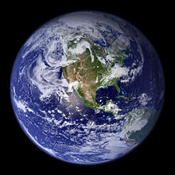

Earth also known as the world. Terra, or Gaia, is the third planet from the Sun, the densest planet in the Solar System. the largest of the Solar System's four terrestrial planets, and the only celestial body known to accomodate life. It is home to about 8.72 million species. There are over 7.1 billions of humans who depend upon its biosphere and minerals. The Earth's human population is divided among about two hundred independent states that interact through diplomacy, conflict, travel, trade, and media.
According to radiometric dating and other sources of evidence, Earth formed over 4.5 billion years ago. Earth's gravity interacts with other objects in space, especially the Sun and the Moon, Earth's only natural satellite. Earth revolves around the Sun in 365.26 days, a period known as an Earth year. During this time, Earth rotates about its axis about 366.26 times.
Earth's axis of rotation is tilted, producing seasonal variations on the planet's surface. The gravitational interaction between the Earth and Moon causes ocean tides, stabilizes the Earth's orientation on its axis, and gradually slows its rotation. Earth is the densest planet in the Solar System and the largest of the four terrestrial planets.
Earth's lithosphere is divided into several rigid tectonic plates that migrate across the surface over periods of many millions of years. About 71% of Earth's surface is covered with water, mostly by oceans. The remaining 29% is land consisting of continents and islands that together have many lakes, rivers and other sources of water that contribute to the hydrosphere. The majority of Earth's polar regions are covered in ice, including the Antarctic ice sheet and the sea ice of the Arctic ice pack. Earth's interior remains active with a solid iron inner core, a liquid outer core that generates the Earth's magnetic field, and a convecting mantle that drives plate tectonics.
Within the first billion years of Earth's history, life appeared in the oceans and began to affect the Earth's atmosphere and surface, leading to the proliferation of aerobic and anaerobic organisms. Some geological evidence indicates that life may have arisen as much as 4.1 billion years ago. Since then, the combination of Earth's distance from the Sun, physical properties, and geological history have allowed life to evolve and thrive. In the history of the Earth, biodiversity has gone through long periods of expansion, occasionally punctuated by mass extinction events.

Go to top